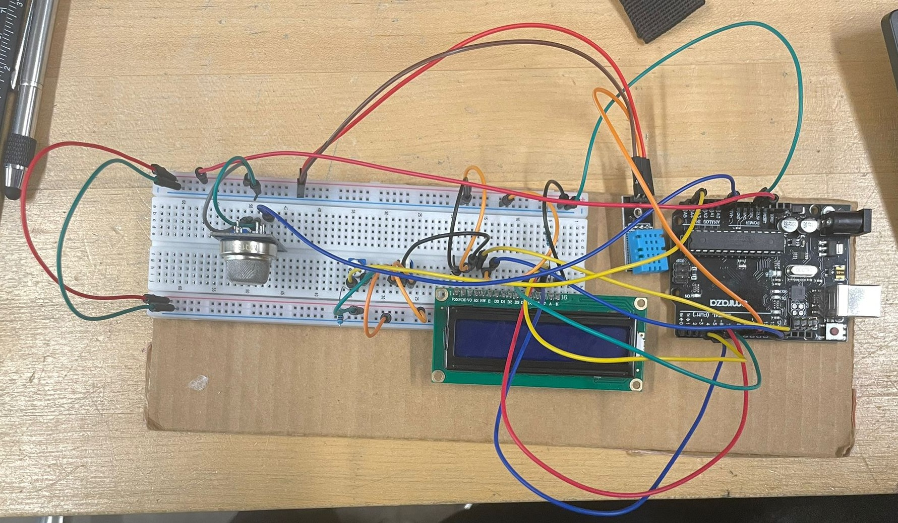

Circuit Diagram
The ultrasonic sensor measures distance; the Arduino activates LEDs and the buzzer according to distance thresholds.

Course: TECH 117 (Computer Engineering Technology, Fall 2025)
Instructor: Ph.D. Ana Rodrigues
Team Members:
This project uses an Arduino Uno, an MQ-135 Gas Sensor, a TMP 36 Temperature Sensor, Liquid Crystal Display ,and Potentiometer to monitor environmental conditions such as air quality, humidity, and detect to gas and smoke.
The ultrasonic sensor measures distance; the Arduino activates LEDs and the buzzer according to distance thresholds.
| Item | Qty | Unit Price (CAD) | Subtotal (CAD) | Source |
|---|---|---|---|---|
| Arduino Uno Rev3 | 1 | $27.60 | $27.60 | Arduino Store |
| MQ-135 Gas Sensor | 1 | $7.85 | $7.85 | Adafruit |
| TMP 36 Temperature Sensor | 1 | $4.34 | $4.34 | SparkFun |
| Liquid Crystal Display | 3 | $7.00 | $7.00 | Adafruit |
| Potentiometer | 3 | $1.6 | $1.6 | Adafruit |
| Breadboard | 1 | $4.95 | $4.95 | Adafruit |
| Jumper Wires | 1 set | $3.50 | $3.50 | SparkFun |
| Estimated Total | $56.84 | — | ||
The following image shows the assembled prototype on a breadboard.
The following Arduino code controls the system, lighting LEDs and activating the buzzer based on distance readings from the HC-SR04 sensor.
// C++ code
//directive
#include
//crystal pins
LiquidCrystal lcd(12, 11, 5, 4, 3, 2);
//pin setup
int const Switch=A5;
int const Sensor_Air=A0;
int const Sensor_Temp=A1;
//the setup funnction
void setup()
{
//lcd setup
lcd.begin(16, 2);
lcd.display();
//pin setup
Serial.begin(9600);
}
//the function that change the mode through the pot
int mode_Pick(int a){
int mode=0;
if(a<=341){
mode=1;
}
if(a>=682){
mode=2;
}
if(!(a>=682)&&!(a<=341)){
mode=3;
}
return mode;
}
void warning(int a, int b){
if(a==1){
if(b<13||30
The system effectively demonstrates distance-based alerting using Arduino. It’s affordable, educational, and sustainable through reusable components.
The following external resources and example projects demonstrate related Arduino applications using ultrasonic distance sensors, passive buzzers, and multicolour LEDs: